第 18 页 · Jordens befolkning
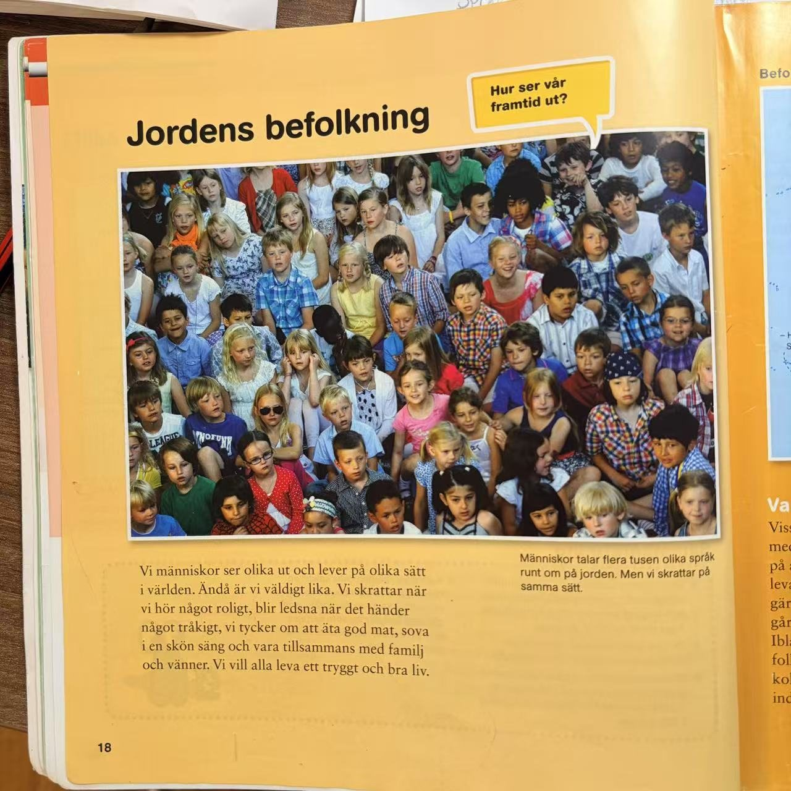
🇨🇳 第 18 页 · 中文译文
世界人口
我们人类虽然外貌不同，在世界各地的生活方式也不同，但我们有许多共同之处。听到有趣的事会笑，遇到伤心的事会难过。我们喜欢吃美味的食物，睡在舒适的床上，和家人与朋友在一起。我们都希望生活安全、美好。
世界各地的人们说着几千种不同的语言，但我们笑起来的方式是相同的。
世界人口 · 瑞典语学习与复习 · 课本第18–29页
先阅读课本原文，再学习老师给出的重要概念，再回答老师的13道原题。遇到困难可以看中文提示，自己写完瑞典语答案后再查看参考答案。
每页上方是瑞典语课本原文照片（含地图、插图和图表），下方是对应的中文翻译，方便对照学习。点击“隐藏中文译文”可以先独立阅读。中文翻译按原文段落整理，图表及附注的关键信息也已说明。

我们人类虽然外貌不同，在世界各地的生活方式也不同，但我们有许多共同之处。听到有趣的事会笑，遇到伤心的事会难过。我们喜欢吃美味的食物，睡在舒适的床上，和家人与朋友在一起。我们都希望生活安全、美好。
世界各地的人们说着几千种不同的语言，但我们笑起来的方式是相同的。
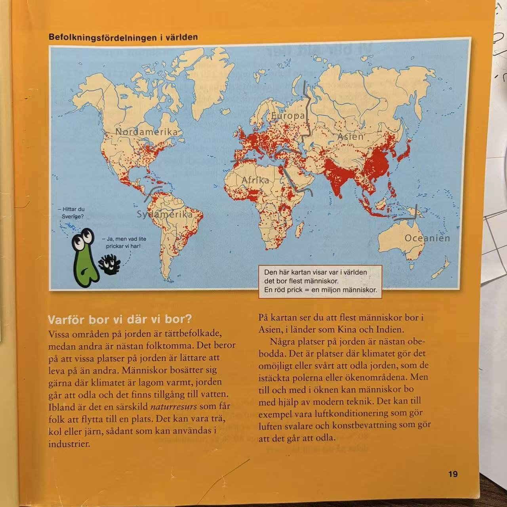
地球上有些地区人口稠密，有些地区几乎没有人居住。这是因为有些地方比其他地方更适合生活。人们通常喜欢居住在气候温暖适宜、土地可以耕种、容易获得水的地方。有时，某种特殊的自然资源会吸引人们迁居，例如木材、煤或铁，这些资源可以用于工业。
从地图可以看出，大量人口居住在亚洲，例如中国和印度。有些地方几乎无人居住，例如寒冷的极地和干旱的沙漠，因为气候使耕种十分困难，甚至不可能。不过，现代技术使一些沙漠地区也能有人居住，例如使用空调降温和人工灌溉种植。地图上的一个红点代表100万人。
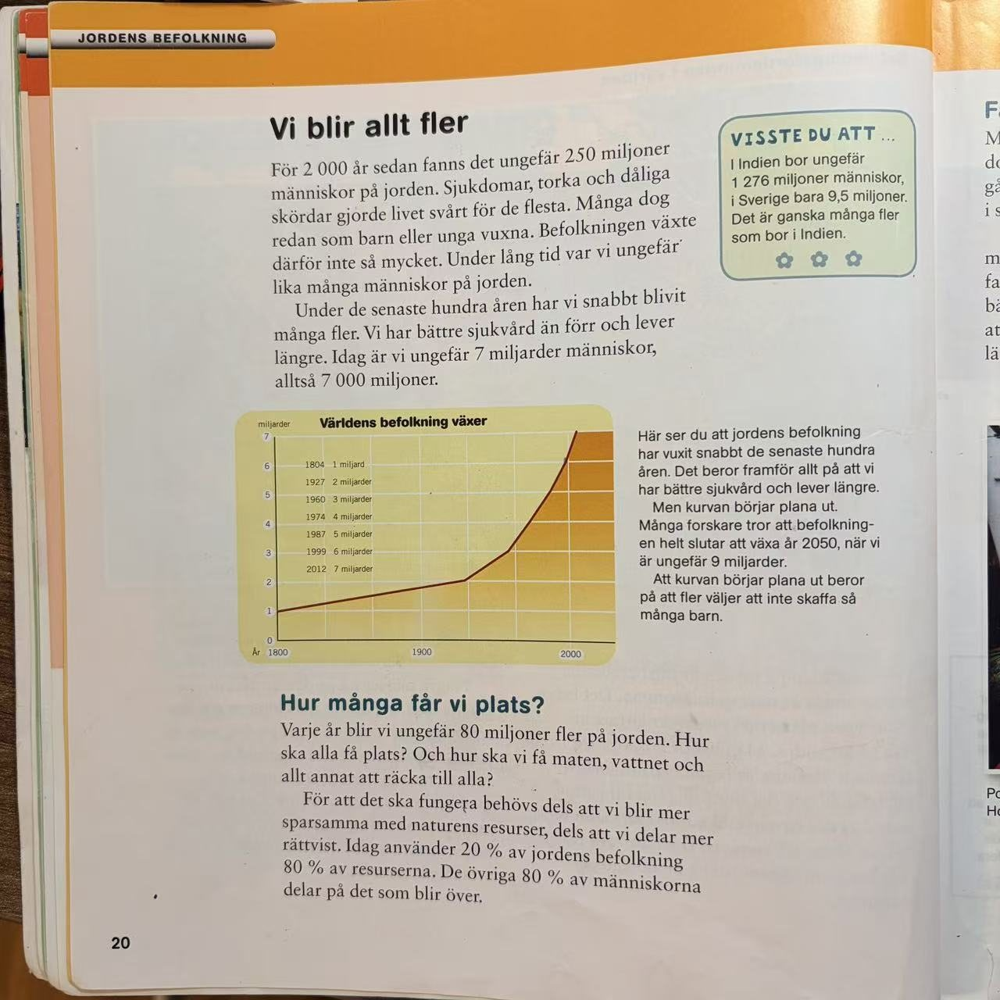
大约两千年前，地球上有约2.5亿人。疾病、干旱和歉收使许多人的生活艰难，很多人在儿童或青年时期就去世。因此，人口长期增长缓慢。
过去的一百多年里，世界人口迅速增加。医疗水平提高，人们活得更久。课本编写时，世界人口约70亿。图表显示1804年约10亿、1927年20亿、1960年30亿、1974年40亿、1987年50亿、1999年60亿、2012年70亿。
图表旁的文字说，当时有研究人员预测人口可能在2050年前后接近90亿后停止增长，因为越来越多人选择少生孩子。这是旧教材的预测，不应当作今天已确定的事实。
每年增加的人口需要食物、水和其他资源。为了让资源足够大家使用，我们既要节约自然资源，也要更公平地分享资源。课本指出，当时约20%的人使用了80%的资源。
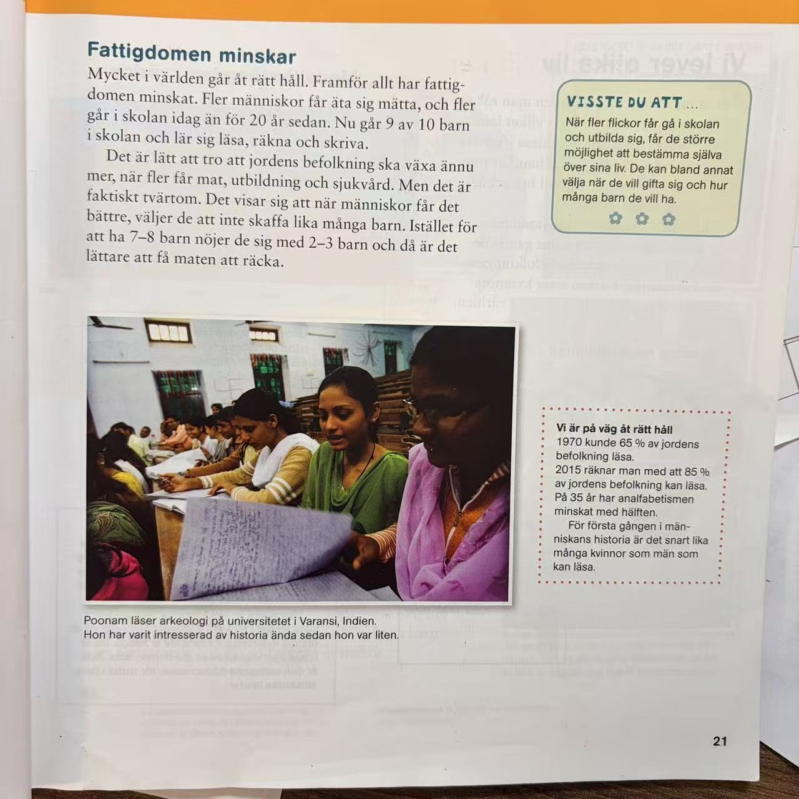
世界上许多方面正朝好的方向发展，尤其是贫困减少。更多人能够吃饱饭，更多孩子能够上学。课本说，当时十个孩子中约有九个上学，并学习阅读、计算和写字。
人们的生活改善后，不一定会生更多孩子，往往恰好相反。当家庭获得食物、教育和医疗保障时，许多人选择生两三个孩子，而不是七八个孩子，这也有助于减缓人口增长。
当更多女孩能够上学和接受教育时，她们未来有更多机会决定自己的人生，例如什么时候结婚以及想要几个孩子。
课本的历史数据指出：1970年约65%的世界人口能够阅读，2015年约85%能够阅读。
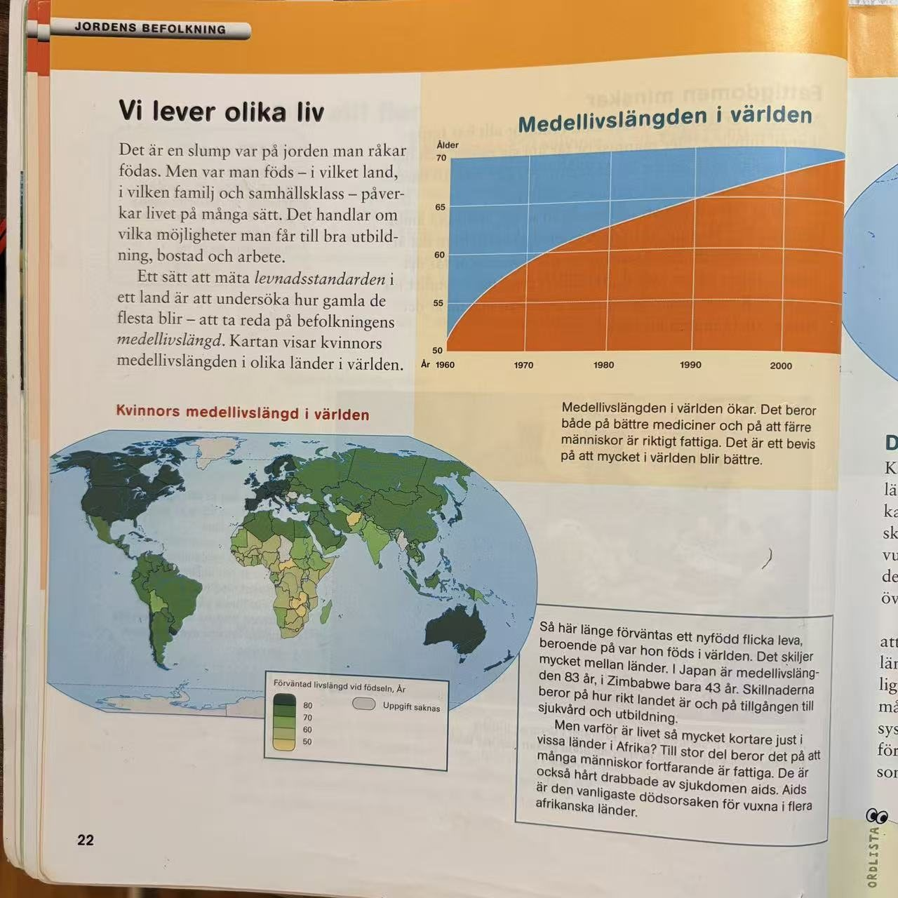
出生在地球上的哪个地方是一种偶然，但出生的国家、家庭和社会阶层会在很多方面影响一个人的生活，包括接受良好教育、获得住房和工作的机会。
衡量一个国家生活水平的一种方法，是研究人们平均能活多久，也就是“平均预期寿命”。地图展示了世界不同国家女孩的预期寿命。
世界平均预期寿命不断提高，原因包括更好的药物和医疗，以及极端贫困人口减少。
课本中的历史例子：日本女孩的平均预期寿命为83岁，而津巴布韦为43岁。差异与国家经济状况、医疗和教育机会有关。部分非洲国家当时还受到贫困和艾滋病的严重影响。这些都是旧教材的数据。
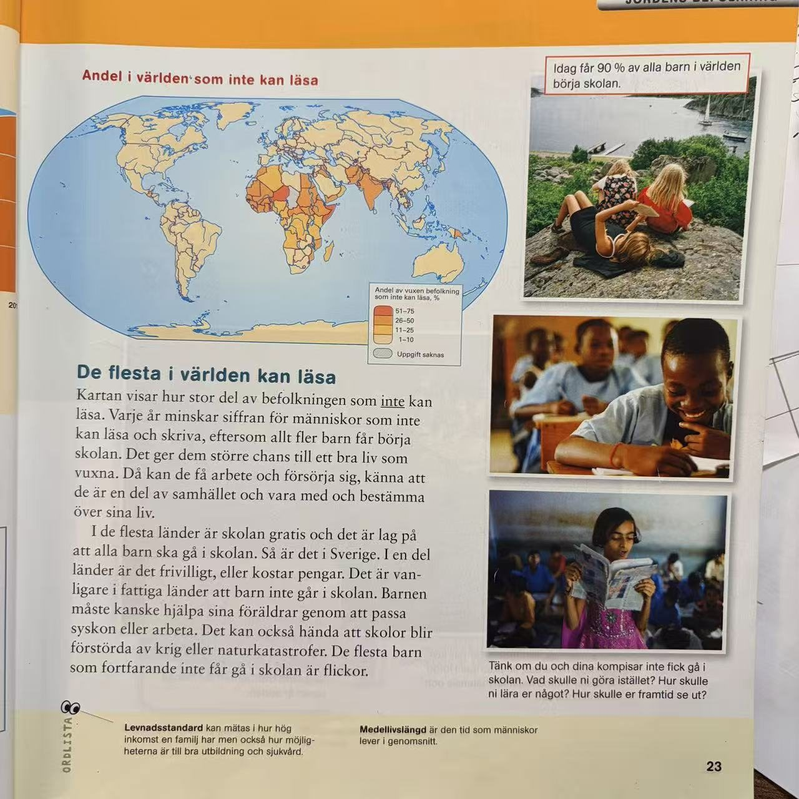
地图显示各地不能阅读的人口比例。随着越来越多的孩子能够上学，不会阅读和写字的人所占比例逐渐减少。学会读写能让人在成年后有更多机会找到工作、养活自己、参与社会并影响自己的生活。
在许多国家，上学免费，而且法律规定所有孩子都应当上学，瑞典就是如此。但在一些国家，上学并非义务教育，或者需要交费。
在贫困国家，有些孩子无法上学，因为他们必须照顾弟妹或工作来帮助家庭。战争和自然灾害也可能摧毁学校。仍然无法上学的儿童中，女孩面临的困难尤其值得关注。
想一想：如果你和朋友都不能上学，你们会做什么？又该如何学习？未来可能会怎样？
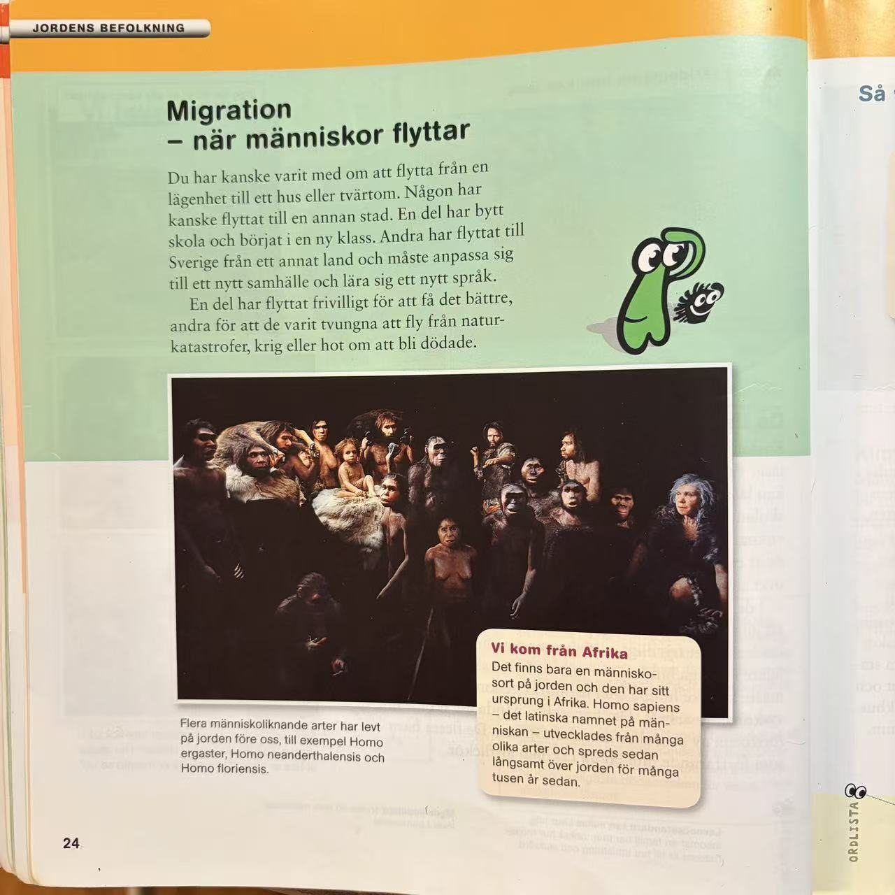
你可能从公寓搬到独立住宅，也可能搬到另一座城市或换学校。有些人从其他国家搬到瑞典，需要适应新的社会并学习新的语言。
有些人为了获得更好的生活而自愿迁移；另一些人则因为自然灾害、战争或生命受到威胁而不得不逃离。
我们来自非洲：现代人类的祖先起源于非洲。智人（Homo sapiens）在漫长的历史中逐渐扩散到世界各地。过去地球上还生活过其他人类近亲，例如尼安德特人。
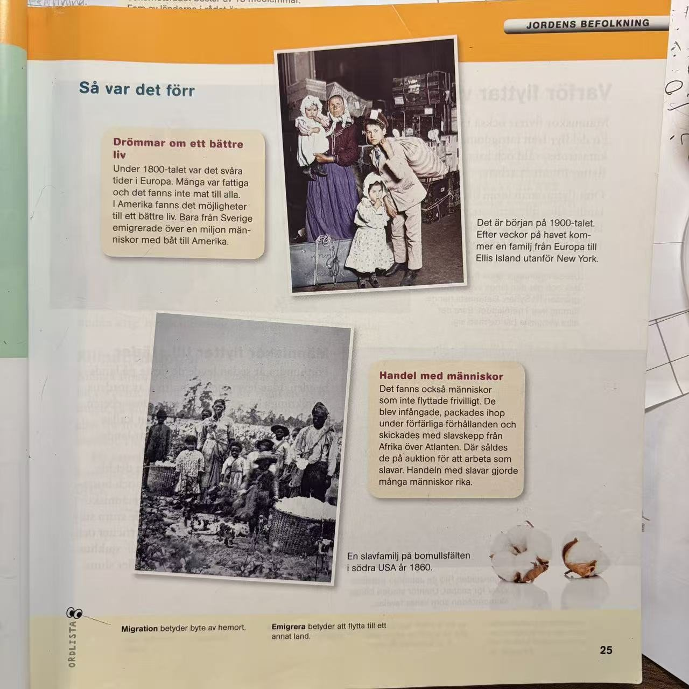
十九世纪的欧洲经历过困难时期，许多人贫困，食物也不够。美洲提供了改善生活的机会，因此大量欧洲人移居美洲。仅瑞典就有超过一百万人移民到美洲。
上方照片表现二十世纪初，一个来自欧洲的家庭经过数周海上旅程抵达纽约附近的埃利斯岛。
人口贩卖与奴隶贸易：历史上并非所有人都是自愿迁移的。许多人被强行抓捕，在恶劣条件下被运过大西洋，并在美洲被当作奴隶出售和强迫劳动。奴隶贸易使一些人致富。
Migration 指迁移或更换居住地；emigrera 指移民离开一个国家。
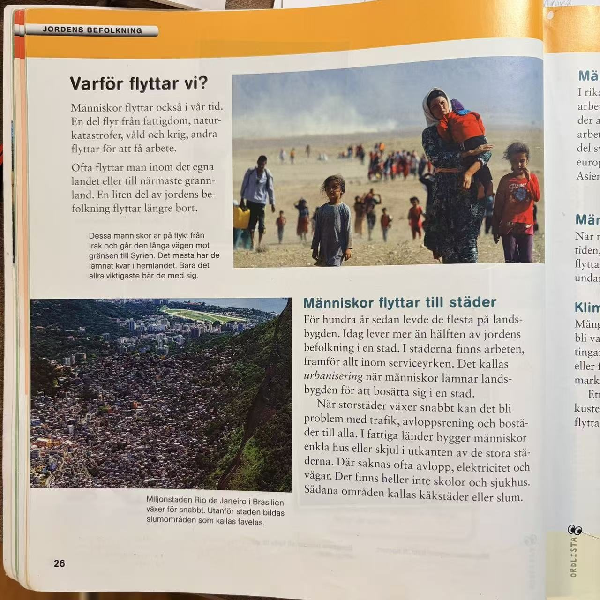
今天人们仍然迁移。有些人为了摆脱贫困、自然灾害、暴力和战争而逃离；有些人为了工作而搬家。人们通常在本国境内迁移，或者迁往邻国，只有一小部分迁往更远的地方。
课本照片中，人们正从伊拉克逃往叙利亚边境，只携带最重要的物品。
人们迁往城市：一百年前，大多数人生活在乡村。课本编写时，世界已有超过一半的人口住在城市。城市里有工作机会，尤其是服务业。人们从乡村迁往城市居住，称为城市化（urbanisering）。
城市迅速发展可能带来交通、污水处理和住房不足等问题。在贫困国家，一些人只能在大城市边缘搭建简陋房屋，那里可能缺少下水道、电力、道路、学校和医院。这些地区被称为贫民区（slum）。
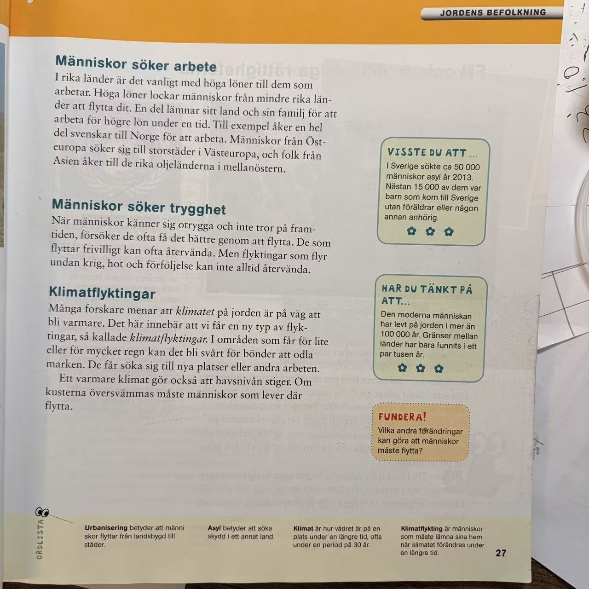
富裕国家通常工资较高，因此吸引其他国家的人前来工作。有些人暂时离开家人去赚取更高工资。课本举例说，有些瑞典人去挪威工作，东欧居民去西欧大城市寻找工作，亚洲部分地区的人去中东富裕的产油国工作。
人们寻找安全：当人们感到不安全、对未来失去信心时，可能尝试通过迁移改善生活。自愿迁移的人往往可以回去，但为了躲避战争、威胁和迫害而逃离的难民，不一定能够返回。
气候难民：全球气候变暖可能使一些地区降雨过少或过多，让农民难以种植作物，因此人们不得不迁移或寻找其他工作。气温升高也会导致海平面上升，沿海地区若被淹没，居民就必须搬离。
重要词：urbanisering（城市化）；asyl（庇护）；klimat（长期气候）；klimatflykting（因气候变化影响而被迫迁移的人）。
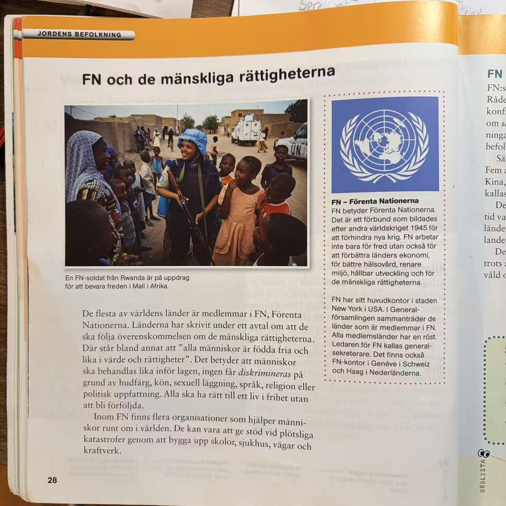
世界上大多数国家都是联合国（FN，Förenta Nationerna）的成员。成员国承诺遵守关于人权的共同原则，其中包括“人人生而自由，在尊严和权利上一律平等”。
这意味着人们在法律面前应当受到平等对待，不应因肤色、性别、性取向、语言、宗教或政治观点受到歧视。人人都应享有自由生活、不受迫害的权利。
联合国内还有许多组织帮助世界各地的人们。例如发生突发灾害后，支持重建学校、医院、道路和发电设施。
联合国成立于1945年，目标包括维护和平、促进发展、改善医疗、保护环境、推动可持续发展和保障人权。总部位于美国纽约。
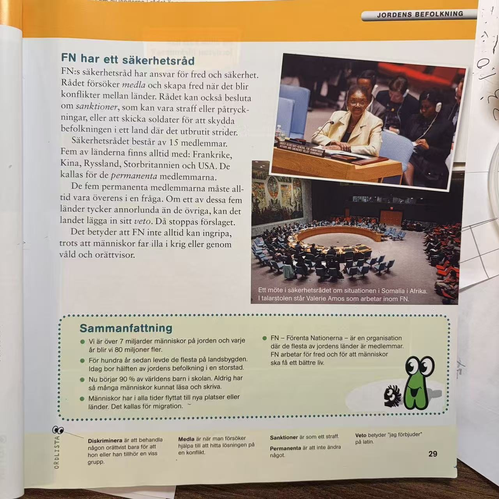
联合国安全理事会负责国际和平与安全。当国家之间发生冲突时，安理会尝试调解、促成和平，也可以决定实施制裁，或批准采取保护平民的行动。
安全理事会有15个成员，其中5个是常任理事国：法国、中国、俄罗斯、英国和美国。
五个常任理事国拥有否决权（veto）。在需要常任理事国同意的实质性决议中，如果其中一国投反对票，提案就不能通过。这意味着联合国有时无法采取行动，即使有人正在遭受战争、暴力和不公。
本章总结：世界人口增长、更多儿童上学、人类一直在迁移、城市人口增加；联合国努力维护和平并改善人们的生活。
先试着自己解释瑞典语单词，再点击“显示解释”。理解后勾选“我会了”。
建议先自己用瑞典语回答，再点“查看参考答案”。输入的内容会自动保存在当前浏览器中。
根据瑞典语词语，选择正确的中文意思。完成后可以重新测试。
这里保留老师的13道瑞典语原题，不显示中文和参考答案。请独立完成后，回到“老师的13题”对照答案。
尚未开始。建议用30–45分钟练习（时间仅供参考，老师没有规定）。